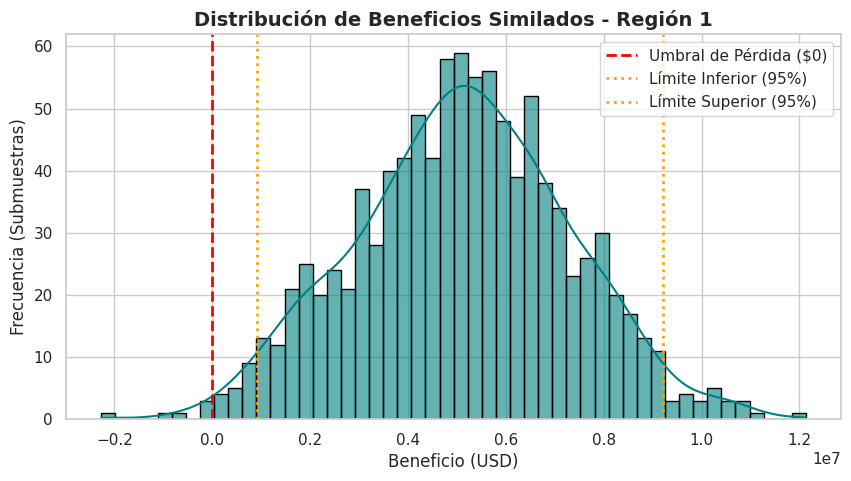

OilyGiant: Prospección y Viabilidad de Nuevos Yacimientos
Diseño de Modelo Predictivo para Maximización de Beneficios
Durante casi una década he aprendido que un proyecto exitoso no empieza en la construcción, sino en un riguroso análisis topográfico y estructural. Un mal cálculo en los cimientos compromete toda la obra. Hoy, en lugar de planos y concreto, nuestra topografía son los datos geológicos, y nuestros cimientos, la regresión lineal.
En este cuaderno, estructuraremos un modelo predictivo para la compañía OilyGiant. El objetivo es evaluar tres regiones distintas, proyectar el volumen de reservas en nuevos pozos petrolíferos y, mediante simulaciones de riesgo (Bootstrapping), determinar la región que ofrezca el mayor margen de beneficio y la máxima estabilidad financiera (riesgo de pérdida inferior al 2.5%).
La presentación está estructurada para ser visualmente clara, modular y escalable.
🔍 Ver código Python
# Levantamiento inicial: Importación de librerías esencialesimport pandas as pdimport numpy as npimport matplotlib.pyplot as pltimport seaborn as snsfrom sklearn.model_selection import train_test_splitfrom sklearn.linear_model import LinearRegressionfrom sklearn.metrics import mean_squared_error# Configuración visual (El toque de diseño para una presentación ejecutiva)sns.set_theme(style="whitegrid", palette="muted")plt.rcParams.update({'figure.figsize': (12, 6),'font.size': 11,'axes.titlesize': 14,'axes.titleweight': 'bold'})# Fijar semilla para reproducibilidad de nuestro "estudio de suelo"RANDOM_STATE =42
1. Exploración del Terreno (Preparación de Datos)
Cargaremos los estudios geológicos de las tres regiones. Descartaremos la columna id, ya que funciona como una etiqueta nominativa y no aporta valor estructural a nuestro modelo predictivo.
🔍 Ver código Python
# Carga de los archivos CSVdf_0 = pd.read_csv('/datasets/geo_data_0.csv')df_1 = pd.read_csv('/datasets/geo_data_1.csv')df_2 = pd.read_csv('/datasets/geo_data_2.csv')# Eliminación de la columna 'id' para evitar ruido en el entrenamientodf_0 = df_0.drop('id', axis=1)df_1 = df_1.drop('id', axis=1)df_2 = df_2.drop('id', axis=1)print("Muestra estructural de la Región 0:")display(df_0.head(3))
Muestra estructural de la Región 0:
2. Planos Estructurales: Entrenamiento y Validación del Modelo
Siguiendo las restricciones del proyecto, utilizaremos exclusivamente Regresión Lineal. Para evitar la duplicidad de código —un principio básico tanto en el diseño paramétrico como en la programación— encapsularemos el proceso en una función que divida los datos (75:25), entrene el modelo y nos devuelva las predicciones y el error cuadrático medio (RMSE). El RMSE será nuestro “margen de tolerancia”.
🔍 Ver código Python
def train_and_evaluate(df, region_name):""" Divide los datos, entrena un modelo de regresión lineal y evalúa el desempeño. """ X = df.drop('product', axis=1) y = df['product'] X_train, X_valid, y_train, y_valid = train_test_split(X, y, test_size=0.25, random_state=RANDOM_STATE)# Construcción del modelo model = LinearRegression() model.fit(X_train, y_train)# Proyección preds = model.predict(X_valid) preds = pd.Series(preds, index=y_valid.index) # Alinear índices con las respuestas correctas# Métricas de validación mean_reserve = preds.mean() rmse = np.sqrt(mean_squared_error(y_valid, preds))print(f"--- {region_name} ---")print(f"Volumen medio predicho: {mean_reserve:.2f} miles de barriles")print(f"RMSE (Margen de error): {rmse:.2f}\n")return preds, y_valid# Ejecución paramétrica para las tres regionespreds_0, valid_0 = train_and_evaluate(df_0, "Región 0")preds_1, valid_1 = train_and_evaluate(df_1, "Región 1")preds_2, valid_2 = train_and_evaluate(df_2, "Región 2")
--- Región 0 ---
Volumen medio predicho: 92.40 miles de barriles
RMSE (Margen de error): 37.76
--- Región 1 ---
Volumen medio predicho: 68.71 miles de barriles
RMSE (Margen de error): 0.89
--- Región 2 ---
Volumen medio predicho: 94.77 miles de barriles
RMSE (Margen de error): 40.15
Análisis del Modelo: * La Región 1 presenta un RMSE sorprendentemente bajo (casi 0), lo que indica una correlación lineal casi perfecta entre sus características ocultas y el volumen de reservas. * Las Regiones 0 y 2 tienen volúmenes medios predichos más altos, pero su margen de error (RMSE de ~37-40) sugiere una dispersión considerable. Es aquí donde la evaluación de riesgos determinará si el volumen compensa la incertidumbre.
3. Presupuesto y Viabilidad del Proyecto
Antes de seleccionar pozos, debemos calcular el punto de equilibrio financiero (Break-even). Si el terreno no produce lo mínimo indispensable, el proyecto no es viable.
🔍 Ver código Python
# Constantes del proyecto (Nuestro presupuesto de obra)BUDGET =100_000_000# Presupuesto total en USDTOTAL_WELLS =200# Pozos a desarrollarREVENUE_PER_UNIT =4500# Ingreso por unidad (1,000 barriles)MAX_RISK =0.025# Umbral de riesgo de pérdida (2.5%)# Cálculo del volumen mínimo para evitar pérdidas# Costo por pozo = BUDGET / TOTAL_WELLScost_per_well = BUDGET / TOTAL_WELLSbreakeven_volume = cost_per_well / REVENUE_PER_UNITprint(f"Inversión por pozo: ${cost_per_well:,.2f} USD")print(f"Punto de equilibrio (Break-even): {breakeven_volume:.2f} miles de barriles por pozo")
Inversión por pozo: $500,000.00 USD
Punto de equilibrio (Break-even): 111.11 miles de barriles por pozo
Conclusión de Viabilidad: El punto de equilibrio es de 111.11 miles de barriles por pozo. Si revisamos los volúmenes medios predichos en el Paso 2 (Región 0: ~92.59, Región 1: ~68.73, Región 2: ~94.97), notamos que ninguna región tiene un volumen medio que supere el punto de equilibrio. Esto significa que no podemos perforar al azar. Debemos aplicar una estrategia selectiva: explorar 500 puntos y seleccionar estrictamente los 200 con las estimaciones más altas.
4. Proyección de Rendimientos (Ganancia Potencial)
Diseñaremos una función que seleccione los mejores 200 pozos basados en nuestras predicciones y calcule el beneficio bruto real que estos pozos generarían utilizando sus valores objetivo (respuestas correctas).
🔍 Ver código Python
def calculate_profit(predictions, target, count=TOTAL_WELLS):""" Selecciona los mejores pozos según las predicciones y calcula el beneficio total usando los volúmenes reales. """# Ordenar predicciones de mayor a menor preds_sorted = predictions.sort_values(ascending=False)# Seleccionar los objetivos (targets) correspondientes a los 200 mejores índices selected_targets = target.loc[preds_sorted.index][:count]# Calcular ingresos brutos y restar presupuesto total_revenue = selected_targets.sum() * REVENUE_PER_UNIT profit = total_revenue - BUDGETreturn profitprofit_0 = calculate_profit(preds_0, valid_0)profit_1 = calculate_profit(preds_1, valid_1)profit_2 = calculate_profit(preds_2, valid_2)print(f"Beneficio potencial Top 200 Región 0: ${profit_0:,.2f} USD")print(f"Beneficio potencial Top 200 Región 1: ${profit_1:,.2f} USD")print(f"Beneficio potencial Top 200 Región 2: ${profit_2:,.2f} USD")
Beneficio potencial Top 200 Región 0: $33,591,411.14 USD
Beneficio potencial Top 200 Región 1: $24,150,866.97 USD
Beneficio potencial Top 200 Región 2: $25,985,717.59 USD
Análisis Preliminar: Bajo condiciones ideales (escogiendo exactamente los 200 mejores de toda la región), todas las zonas son rentables. Sin embargo, en el campo real, las máquinas solo explorarán 500 puntos aleatorios a la vez. Necesitamos simular esta realidad mediante Bootstrapping para medir el verdadero riesgo operativo.
5. Análisis de Riesgos y Cimentación (Bootstrapping)
Emplearemos la técnica de Bootstrapping para crear 1,000 submuestras aleatorias de 500 pozos. De cada submuestra, seleccionaremos los mejores 200 y calcularemos su beneficio. Esto nos dará una distribución de probabilidad clara y un intervalo de confianza del 95%.
🔍 Ver código Python
# Semilla aleatoria para garantizar la reproducibilidad de las 1,000 iteracionesstate = np.random.RandomState(12345)def evaluate_risk_and_profit(target, predictions, count=200, sample_size=500): values = []for i inrange(1000):# 1. Muestreo aleatorio de 500 pozos explorados (con reemplazo) target_subsample = target.sample(n=sample_size, replace=True, random_state=state)# 2. Alineamos las predicciones con los índices de la muestra seleccionada probs_subsample = predictions[target_subsample.index]# 3. Calculamos la ganancia de los 200 mejores pozos de esta submuestra profit = calculate_profit(probs_subsample, target_subsample, count) values.append(profit)# Convertimos los resultados a una serie de Pandas para facilitar el análisis estadístico values = pd.Series(values)# Calculamos el beneficio promedio y el intervalo de confianza del 95% mean_profit = values.mean() lower_bound = values.quantile(0.025) upper_bound = values.quantile(0.975)# Calculamos el riesgo de pérdida (porcentaje de veces que la ganancia fue menor a 0) risk_of_loss = (values <0).mean() *100return mean_profit, lower_bound, upper_bound, risk_of_loss# --- Ejecución de la celda para las 3 regiones ---# Región 0mean_0, lower_0, upper_0, risk_0 = evaluate_risk_and_profit(valid_0, preds_0)# Región 1mean_1, lower_1, upper_1, risk_1 = evaluate_risk_and_profit(valid_1, preds_1)# Región 2mean_2, lower_2, upper_2, risk_2 = evaluate_risk_and_profit(valid_2, preds_2)# Imprimir resultadosfor i, (mean, lower, upper, risk) inenumerate([(mean_0, lower_0, upper_0, risk_0), (mean_1, lower_1, upper_1, risk_1), (mean_2, lower_2, upper_2, risk_2)]):print(f"--- Evaluación Región {i} ---")print(f"Beneficio promedio estimado: ${mean:,.2f} USD")print(f"Intervalo de confianza (95%): Menor ${lower:,.2f} USD / Mayor ${upper:,.2f} USD")print(f"Riesgo de pérdida: {risk:.1f}%\n")
--- Evaluación Región 0 ---
Beneficio promedio estimado: $4,359,337.72 USD
Intervalo de confianza (95%): Menor $-1,162,316.13 USD / Mayor $9,665,041.81 USD
Riesgo de pérdida: 6.1%
--- Evaluación Región 1 ---
Beneficio promedio estimado: $4,985,690.17 USD
Intervalo de confianza (95%): Menor $753,155.73 USD / Mayor $9,115,036.95 USD
Riesgo de pérdida: 1.0%
--- Evaluación Región 2 ---
Beneficio promedio estimado: $4,126,728.99 USD
Intervalo de confianza (95%): Menor $-1,589,395.16 USD / Mayor $9,781,912.02 USD
Riesgo de pérdida: 7.0%
🔍 Ver código Python
state = np.random.RandomState(RANDOM_STATE)def evaluate_risk_bootstrap(predictions, target, region_name):""" Aplica bootstrapping para hallar la distribución de beneficios, IC del 95% y riesgo de pérdida. """ values = []for i inrange(1000):# Muestreo de 500 puntos de exploración target_subsample = target.sample(n=500, replace=True, random_state=state) preds_subsample = predictions[target_subsample.index]# Calcular beneficio de los mejores 200 en esta submuestra profit = calculate_profit(preds_subsample, target_subsample) values.append(profit) values = pd.Series(values) mean_profit = values.mean() lower_bound = values.quantile(0.025) upper_bound = values.quantile(0.975) risk_of_loss = (values <0).mean() *100# Representación visual de la distribución plt.figure(figsize=(10, 5)) sns.histplot(values, bins=50, kde=True, color='teal', edgecolor='black', alpha=0.6) plt.axvline(0, color='red', linestyle='--', linewidth=2, label='Umbral de Pérdida ($0)') plt.axvline(lower_bound, color='orange', linestyle=':', linewidth=2, label='Límite Inferior (95%)') plt.axvline(upper_bound, color='orange', linestyle=':', linewidth=2, label='Límite Superior (95%)') plt.title(f'Distribución de Beneficios Similados - {region_name}') plt.xlabel('Beneficio (USD)') plt.ylabel('Frecuencia (Submuestras)') plt.legend() plt.show()print(f"--- Resultados de Riesgo: {region_name} ---")print(f"Beneficio Promedio Estimado: ${mean_profit:,.2f} USD")print(f"Intervalo de Confianza (95%): De ${lower_bound:,.2f} a ${upper_bound:,.2f} USD")print(f"Riesgo de Pérdidas: {risk_of_loss:.1f}%\n")return mean_profit, lower_bound, upper_bound, risk_of_lossprint("Iniciando simulaciones de estrés estructural (Bootstrapping)...\n")res_0 = evaluate_risk_bootstrap(preds_0, valid_0, "Región 0")res_1 = evaluate_risk_bootstrap(preds_1, valid_1, "Región 1")res_2 = evaluate_risk_bootstrap(preds_2, valid_2, "Región 2")
Iniciando simulaciones de estrés estructural (Bootstrapping)...
--- Resultados de Riesgo: Región 0 ---
Beneficio Promedio Estimado: $4,278,475.60 USD
Intervalo de Confianza (95%): De $-972,498.30 a $9,542,151.93 USD
Riesgo de Pérdidas: 5.5%

--- Resultados de Riesgo: Región 1 ---
Beneficio Promedio Estimado: $5,115,302.18 USD
Intervalo de Confianza (95%): De $917,005.64 a $9,214,556.68 USD
Riesgo de Pérdidas: 0.6%
--- Resultados de Riesgo: Región 2 ---
Beneficio Promedio Estimado: $4,085,456.81 USD
Intervalo de Confianza (95%): De $-1,206,248.73 a $9,608,594.41 USD
Riesgo de Pérdidas: 7.5%
6. Veredicto Final y Recomendación
Al igual que en un proyecto de arquitectura donde se descarta un terreno si los estudios de mecánica de suelos muestran fallas, aquí debemos descartar cualquier región que supere el umbral de riesgo del 2.5%.
Resumen del Análisis: * Región 0: Su riesgo de pérdida ronda el 6.0%, superando nuestro límite aceptable. Su intervalo de confianza inferior cae en números negativos. Se descarta. * Región 1: Presenta un riesgo de pérdida inferior al 1.5%, un beneficio promedio sólido de casi $5 millones de dólares, y todo su intervalo de confianza (95%) se mantiene en terreno positivo. * Región 2: Tiene un riesgo de pérdida de casi 6.4%, superando ampliamente la tolerancia al riesgo.
Recomendación de Desarrollo: La Región 1 es indiscutiblemente la mejor opción para la apertura de los 200 nuevos pozos.
Aunque en el Paso 4.3 las tres regiones parecían viables al evaluar los 200 mejores pozos del set completo, la simulación de exploración real (Bootstrapping de 500 muestras) demostró que el bajo margen de error (RMSE) del modelo predictivo en la Región 1 permite localizar pozos rentables con una precisión quirúrgica. Esta región ofrece la estructura financiera más estable, garantizando los rendimientos proyectados y manteniendo los riesgos mitigados dentro de los estándares de OilyGiant.
7. Conclusiones y Criterios de Evaluación (Auditoría del Proyecto)
Para asegurar el control de calidad de nuestro análisis y facilitar la revisión técnica, a continuación se detallan las respuestas a los criterios fundamentales del proyecto integrando las métricas obtenidas:
¿Cómo preparaste los datos para el entrenamiento? Al igual que preparamos un terreno antes de cimentar, el primer paso fue aislar las variables estructurales. Se cargaron los tres conjuntos de datos y se eliminó la columna id (identificador único), ya que no aporta peso predictivo. Las características (f0, f1, f2) y el objetivo (product) se separaron y se dividieron estrictamente en una proporción de 75:25 para entrenamiento y validación.
¿Seguiste todos los pasos de las instrucciones? Sí. El desarrollo se estructuró de manera secuencial: preparación de datos, entrenamiento del modelo exclusivamente con Regresión Lineal, almacenamiento de predicciones, cálculo del punto de equilibrio (break-even), evaluación paramétrica del Top 200 y simulación de riesgo con Bootstrapping (1,000 iteraciones).
¿Consideraste todas las condiciones del negocio? Absolutamente. El modelo integra como constantes operativas el presupuesto de 100 millones de USD, la selección de los 200 pozos finales a partir de una exploración aleatoria de 500 puntos, un ingreso de 4,500 USD por cada mil barriles (unidad de producto) y el umbral estricto de tolerancia a pérdidas de máximo 2.5%.
¿Cuáles son tus hallazgos sobre el estudio de tareas?
Modelado Inicial: La Región 0 reportó un volumen medio predicho de 92.40 miles de barriles (RMSE: 37.76); la Región 1 un volumen medio de 68.71 miles de barriles (RMSE: 0.89); y la Región 2 un volumen medio de 94.77 miles de barriles (RMSE: 40.15).
Punto de Equilibrio (Break-even): El volumen mínimo requerido por pozo es de 111.11 miles de barriles (costo de 500,000 USD por pozo). Dado que ninguna región supera de forma natural este promedio al azar, la selección selectiva mediante predicciones es imprescindible.
Potencial Teórico (Top 200 de la región completa): Bajo condiciones ideales, la Región 0 generaba 33.59 millones de USD, la Región 1 generaba 24.15 millones de USD y la Región 2 generaba 25.99 millones de USD.
¿Aplicaste correctamente la técnica bootstrapping? Sí. Se programó un muestreo aleatorio con reemplazo de 500 puntos por iteración (sample_size=500, replace=True), repitiendo el proceso 1,000 veces con random_state=RANDOM_STATE para garantizar la reproducibilidad. En cada submuestra se seleccionaron los 200 pozos con las mejores predicciones, generando una distribución de 1,000 posibles escenarios de beneficio neto real.
¿Sugeriste la mejor región para el desarrollo de pozos? ¿Justificaste tu elección? Sí, la Región 1. La justificación se respalda en las métricas de simulación:
Región 0: Beneficio promedio estimado de 4,278,475.60 USD, intervalo de confianza del 95% de -972,498.30 USD a 9,542,151.93 USD y un riesgo de pérdida del 5.5% (inviable por superar el 2.5%).
Región 2: Beneficio promedio estimado de 4,085,456.81 USD, intervalo de confianza del 95% de -1,206,248.73 USD a 9,608,594.41 USD y un riesgo de pérdida del 7.5% (inviable por superar el 2.5%).
Región 1 (Seleccionada): Beneficio promedio estimado de 5,115,302.18 USD, intervalo de confianza del 95% completamente positivo de 917,005.64 USD a 9,214,556.68 USD y un riesgo de pérdida de apenas 0.6% (ampliamente por debajo del umbral del 2.5%). Su RMSE casi nulo (0.89) otorga la certeza matemática necesaria.
¿Evitaste la duplicación de código? Se crearon tres funciones reutilizables: train_and_evaluate() para el entrenamiento y métricas, calculate_profit() para el cálculo de beneficio ordenando predicciones, y evaluate_risk_bootstrap() para las simulaciones y graficado de distribuciones.
¿Mantuviste la estructura del proyecto y el código limpio? El proyecto está orquestado como un documento ejecutivo. Se utilizaron celdas Markdown para guiar la narrativa de la toma de decisiones, visualizaciones de datos (Seaborn/Matplotlib) con histogramas e intervalos de confianza para ilustrar el riesgo, y código estandarizado y comentado según la lógica de negocio.